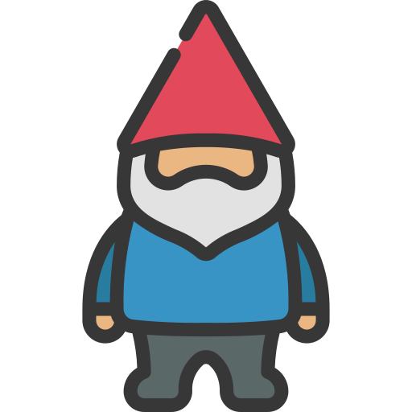

Hey Buffer!
Come meet me!
I built something!! 😊 You can check it out here.
After I applied for Buffer’s new Operations & Automations role, I kept thinking about it and how exciting the opportunity is. ✨ So I decided to test myself and, using the publicly available data about where the team is distributed, I created a small prototype that explores how to coordinate meetings across time zones more fairly. It’s an early version, but fully usable. 🌍⏰
I currently work remotely at Fever (a global SaaS company), so I live the timezone juggling daily. 🏠 My background leans toward legal/ops, which means I often coordinate across teams, including social media team which lets me do some fun stuff! 🎉
I said in my application that I do not have much experience and that is true — but I failed to say that I have tried and failed!
Chronologically:
- Dr. Carsi Supongo: I opened the account at 15 trying to help my father out with content for his exposition (created an Instagram, email, etc.).
- Vecinasdemaastricht — was an Instagram page where I shared my adventures with my roommate (sadly the profile was lost).
- Planutasconlasutas — a shared Instagram where me and my friends post about events that we organize!
- And lastly, I work at Fever that owns Secret Media Network, so you can actually find me in their latest video opening some candy.
1. Governance & Structure
Organizing what gets documented, where it lives (Notion/Drive Indexed), and a clear naming system.
2. Smart contribution Automation/gamification
for a submission flow that saves document, renames it and adds to index (maybe a nice library gnome).

3. AI Library style
Use agentic power to FIND documents easily, chat to ask what you need. (Again… maybe ask a nice gnome )
Data, data, data!
Two big blocks:
Work
- Where do we dedicate most time (Volume)
- What tasks take us longer (pain point)
- How many new docs/new edits (knowledge increase data)
- etc.
Benefits
- Vacations
- Books
- Meeting Hours
- Healthcare
- And more!
The Lawyer in me says research into labor laws of different countries would first be necessary to see at what extent this can be calculated, e.g the info for some topics should be generalised and not attributed by name
1. Something old
Revisit key knowledge to strengthen retention and keep us sharp! (spaced repetition)
2. Something new
What is new in our knowledge hub! What are we excited about!
3. Something borrowed
What Bufferoos recommend! Prompt for music and/or books so we can share some recs.
E.g.
- The sun is shining and I'm having a beer with friends
- You are the villain but no one knows what you have done yet
- History repeats itself
4. Something blue TikTok — Three trends to try! Internally, or for your profiles or to write about!
E.g.
a. Optimist: The glass is half full. The pessimist: The glass is half empty. The Bufferoos: The glass is transparent 👏👏 — or any observation on teammates/Buffer!
b. The “I need sunshine” — Show next trips, favorite vacation spots or for Bufferoos who live in the other hemisphere and are seeing the cold approach, make it ironic! (sunshine = fireplace)
c. My nervous system thinking a lion is chasing me when I have just .... — started a new job! or found a bug!
And lastly, there is no bouquet tossing….but it is always open to suggestions! So there would be a newsletter mailbox! 📬